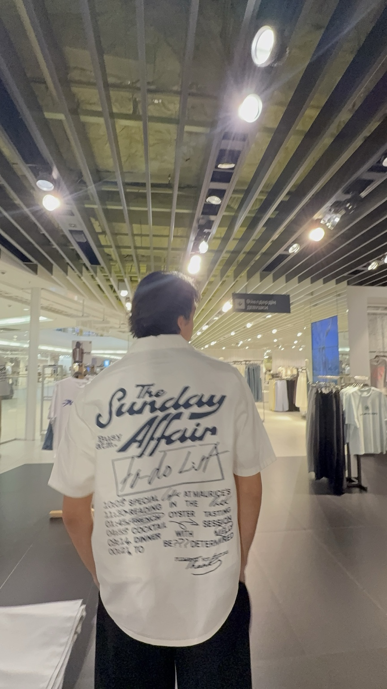

Привет! Меня зовут Динмухамад. Я студент IT-университета, развиваюсь в направлении Python Backend-разработки и параллельно работаю супервайзером контакт-центра.
Сейчас я работаю разработчиком в одной из компаний, сотрудничающей с Яндексом, где разрабатываю сайт с элементами геймификации. Моя основная цель — развиваться как Python Backend Developer, углублять знания архитектуры приложений, баз данных и постепенно переходить к самостоятельному проектированию масштабируемых систем.
Мне особенно интересны backend-разработка, автоматизация внутренних процессов, аналитические системы и продукты, в которых технологии дают измеримый практический результат.
Проект "Puls": Мой основной интерес — разработка систем, решающих реальные бизнес-задачи. Я работаю над собственной корпоративной платформой для управления эффективностью и геймификации сотрудников контакт-центра. В Puls я проектирую бизнес-логику, структуру, роли и права доступа, аналитику, рейтинги, систему достижений и внутреннюю экономику.
Бизнес-экспертиза: Работа супервайзером дала мне практический опыт управления командой, анализа показателей, поиска проблем в процессах и принятия решений на основе данных. При разработке я смотрю на продукт не только как программист, но и как человек, понимающий бизнес-ценность каждой функции.